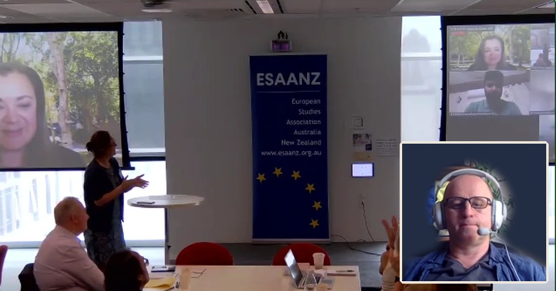
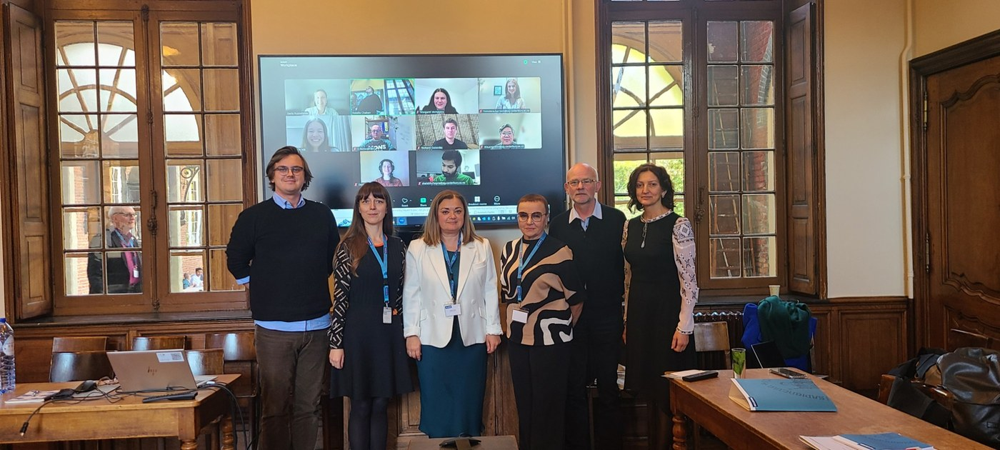
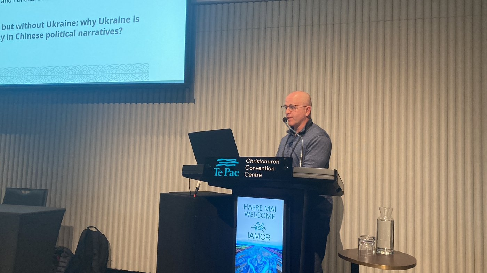
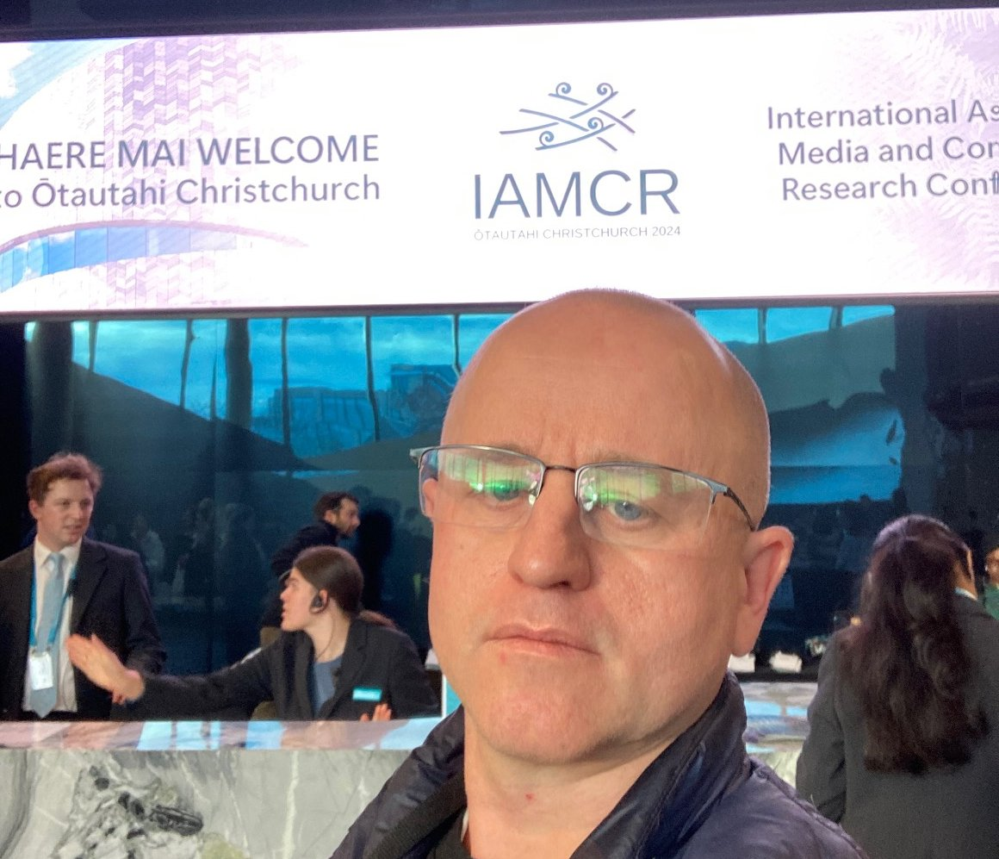

About
I am a New Zealand-based scholar with a PhD in Media and Communication from the University of Canterbury. I work predominantly within the praxeological approach to communication, which combines rationalist philosophy with praxeological methodology and treats communication as a subtype of human action. The approach was formulated by Professor Pavel Slutskiy (2021, 2024). At its core, it draws on Ludwig von Mises’s praxeology and the work of the scholars it inspired, in dialogue with speech-act theory (J. L. Austin, John Searle).
My expertise combines four backgrounds:
Linguistics & cross-cultural communication
A trained sinologist and specialist in cross-cultural communication, fluent in English, Chinese, Russian and Ukrainian.
Area studies
Primarily Chinese studies, including culture, politics, economy and history.
Economics & management
Master’s degree in Management, with more than 15 years of experience in international business, including over 10 years of professional experience in China.
Communication in International Relations
Research on New Zealand vis-à-vis the Russia–Ukraine war, China–Ukraine relations, EU heritage diplomacy, digital diplomacy, strategic communication, etc.
Research Projects
HER-UKR: Challenges and Opportunities for EU Heritage Diplomacy in Ukraine
International research network of 15 universities, coordinated by KU Leuven (Belgium) and funded by the European Commission through Erasmus+ (Jean Monnet). Work Package 5, Strategic Communication, is led by the University of Canterbury.
Project website- 2024China’s Narratives of Ukraine’s Cultural and Historic Heritage During Russia’s Full-Scale Invasion, and of the EU in This Context
- 2026Ukraine’s Digital Diplomacy in China
- 2026Russia’s Narratives of Ukraine’s Cultural and Historic Heritage During Russia’s Full-Scale Invasion, and of the EU in This Context
Doctoral Research: New Zealand’s Strategic Communication about Russia’s War of Aggression against Ukraine
University of Canterbury, 2022–2025
Thesis- 2026Academic–Policy Nexus in Relation to Propaganda and Information Influence in Nordic Countries (Cases of Finland and Sweden)
- 2026China and the Chinese in New Zealand Political Discourse
- 2026New Zealand’s Response to the Russia–Ukraine War: Policy Analyses
- 2026China and the Russia–Ukraine War: Beyond the Headlines
- 2026Ukraine–China Relations in the Context of Russia’s Full-Scale Invasion of Ukraine
- 2023 – 2024Framing Ukraine in New Zealand’s Media During Russia’s Full-Scale Invasion
Publications
- 2026Angeline, M., Szatters, K., & Romanenko, D. Ukraine’s digital heritage diplomacy in China and Indonesia: Soft power visions in comparative perspective. Australian and New Zealand Journal of European Studies, 18(2).ForthcomingJournal website
- 2025Romanenko, D. “Telling China’s story well”: China’s media narratives of Ukraine’s cultural and historic heritage at times of Russia’s full-scale invasion and of the EU in this context. European Foreign Affairs Review, 30(4), 587–598.
doi:10.54648/eerr2025038 - 2025Romanenko, D. Media narratives about Russia’s war of aggression against Ukraine: The case of New Zealand’s coverage of the full-scale invasion. Doctoral thesis, University of Canterbury.
doi:10.26021/16505 - 2024Romanenko, D., & Chaban, N. HER-UKR WP5: Strategic communication — Ukrainian heritage in the Chinese media. Report, KU Leuven.
doi:10.13140/RG.2.2.28696.87046
Presentations
Conference papers
- Nov 2026Cui servitis? Before asking whose interests the new journalism(s) will serve, ask whose interests journalism serves nowUpcoming
- Dec 2024Whose Narrative Does China Tell About Ukraine’s Cultural Heritage?
- Oct 2024Strategic Communication of Ukraine’s Heritage: Focus on the Non-Western Media — Views from the Global South: China
- Jul 2024Ukrainian Cultural Heritage in Chinese Political Narratives
- Jul 2024Images of Ukrainians in New Zealand Media: From the ‘Win a Wife’ Competition to ‘Desperate, Powerless, Disoriented, with Empty Eyes’
Public seminars
- Aug 2026China and the Russia–Ukraine War: Beyond the HeadlinesPoster (PDF)
- Jun 2026Representations of the Chinese in New Zealand Media
Briefings
- Dec 2024Framing Ukraine in Oceania’s Media: Australia, New Zealand and Fiji
- Dec 2024Narratives and Frames of Ukraine in the Latest Media Coverage in Australia, New Zealand and Fiji
- Dec 2023Narratives and Frames of Ukraine in the Media Coverage in Australia and New Zealand (2022–2023)
From the events



